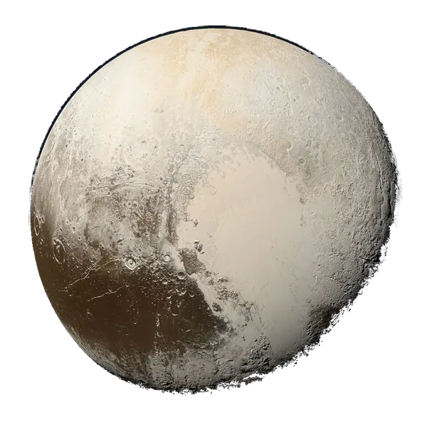

Pluto
Dwarf planet
When and how it formed
Pluto formed in the cold outer disk from icy pebbles and small bodies, like many other Kuiper Belt objects. Its big moon Charon was probably made by a slow, glancing collision. Neptune's outward move later locked Pluto into its present orbit.
Icy pebbles in the far disk gather into small worlds.
A collision with another body forms Charon and Pluto's small moons.
Neptune moves outward and pushes Pluto into its tilted, stretched orbit.
New Horizons (2015) found young ice plains with no craters, so Pluto is still active.
All dates are estimates from meteorites, moon rocks, space missions and computer models.
Inside this world · Tap a layer
Telescope eyepiece simulator
Atmosphere
Oxygen vs Earth: 0% / 20.95%0% / 20.95% · Not breathable, a spacesuit is needed
Could humans live here?
Scored from temperature, air pressure, oxygen, water, surface and gravity. Earth scores 10.
60 kg on Earth feels like
0.06× Earth's gravity · Your weight on other planets
Did you know?
A year on Pluto lasts about 248 Earth years.
Pluto has a huge heart-shaped plain of frozen nitrogen.